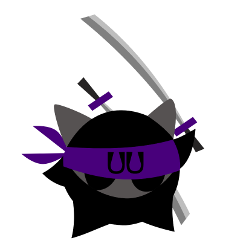

Velkommen
Mitt navn er Janita Omdahl Reirå og jeg studerer interaksjons design ved Fagskolen Kristiania i Oslo.
Litt om meg!
Jeg er en positiv, hjelpsom, kreativ og løsningsorientert person som går langt for å gi den beste servicen jeg kan gi både til jobben og de menneskene jeg har rundt meg.
Før jeg begynte på interaksjonsdesign studiet jobbet jeg 15 år i apotek som farmasøyt. I denne rollen har jeg har sett hvor viktig det er med god forståelse og service for at kundene mine skal få den beste opplevelsen de kan få når de kommer til meg, om det er å finne den beste løsningen på problemene de kommer med eller andre behov som å gi dem en forklaring til det de lurer på.
Den beste følelsen er å finne den løsningen som passer best og som gjør at kunden går smilende ut døra og gjerne kommer igjen og igjen. Så når jeg ville starte på noe helt nytt så ville jeg utfordre problemløsningsevnen og forståelsen min for hva mennesker trenger og jeg føler jeg har funnet det jeg har lett etter.
Jeg brenner for god brukervennlighet på alle plan og vil gjerne være med å kunne gi alle adgang til den digitale verdenen. I løpet av skolegangen har jeg funnet tilbake gleden av å lære nye ting og mener det er læring som er nøkkelen til suksess.
Prosjekter jeg har gjort eller vært med på:
Dette var et skoleprosjekt hvor vi skulle designe en løsning som skulle hjelpe brukeren å lære om Web Content Accessibility Guidelines(WCAG).
Jeg ville gi brukerne av min løsning en gøy opplevelse mens de lærte om noe som kan være ganske kjedelig og tørt ved å gi dem en litt mer leken grunn til å lære. For hvem vil ikke bli en UU Ninja?
Kristiania app
Dette var et gruppeprosjekt hvor vi skulle finne et problem og prøve å løse dette.